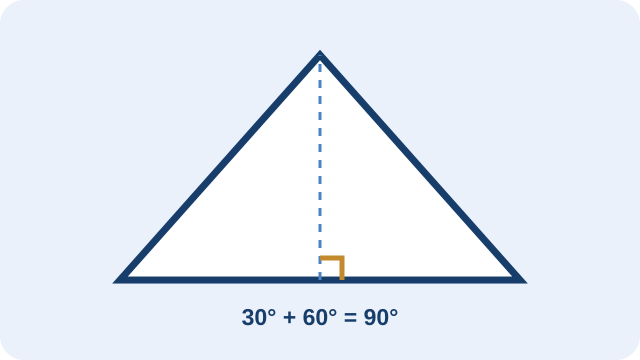
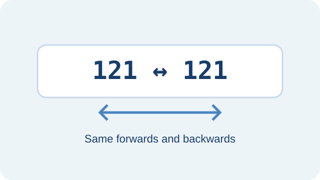
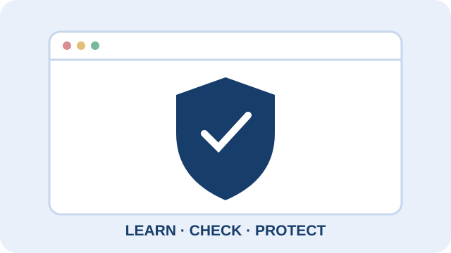

LEARNING BY DOING
My projects.
Two beginner Python projects from COS 102 and a cybersecurity awareness learning concept.

PROJECT 01 · PYTHONRight-Angled Triangle Checker
This program accepts two angles, calculates the third using the fact that the angles in a triangle add up to 180°, and checks whether one angle is 90°.
Concepts: input, arithmetic, conditional statements.
Example: 30° + 60° gives a third angle of 90°, so it is right-angled.
A complete version should validate that all three angles are positive and sum to 180°.

PROJECT 02 · PYTHONPalindrome Number Checker
This program checks whether a number reads the same forwards and backwards by reversing its digits and comparing the result with the original.
Concepts: strings, slicing, comparison, conditionals.
Example: 121 reversed is 121, so it is a palindrome. 123 reversed is 321, so it is not.

PROJECT 03 · CYBERSECURITY AWARENESSWebsite Security Awareness
An educational mini-project for beginners covering HTTPS, unique passwords, multi-factor authentication, phishing awareness, software updates, and safe website practices.
Audience: students and small business owners.
This is a proposed learning concept, not a completed security audit or claim that a real website has been tested.